Tissue is a collection of tools that facilitate the use of computational-design techniques inside Blender.
It consists of different tools, visible in the right panel.
According to the active mode, different tools are displayed:
Tissue Tools (visible in Edit Mode and Object Mode)
Generators are non-destructive functions that generate new objects starting
from input objects. They include Tessellate, Dual Mesh (a special
Tessellate) and Convert to Curve. For all of them, a Refresh operator can be used in order to reload the
changes from the input objects.
The Tessellate tool allows the user to copy a selected object (Component) on the faces of
the active object (Base), adapting its bounding box to the shape of quad faces.
It is possible to use as input objects Mesh, Curve, Surface and Text and Meta objects.
When using Tessellate, two objects must be selected.
Once the Tessellate button was pressed, then more options will appear in the tool parameters.
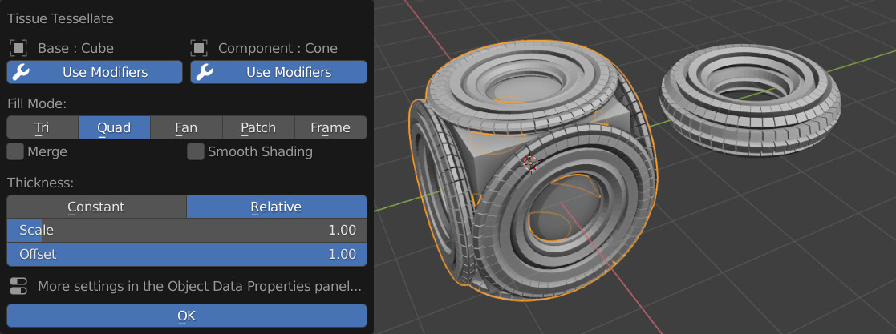
Later it will be possible to change them,
together with more advanced settings from the Object Data Panel of the generated object.
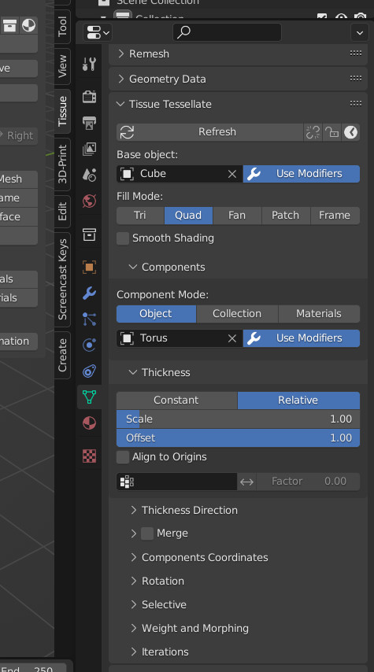
Use Modifiers
This option is available for both Base and Component objects and allows the use
the respective modifiers. If this option is disabled, then only the original object's
data will be used.
填充模式
Tessellation strategy used to map the Component's coordinates on the Base's faces.
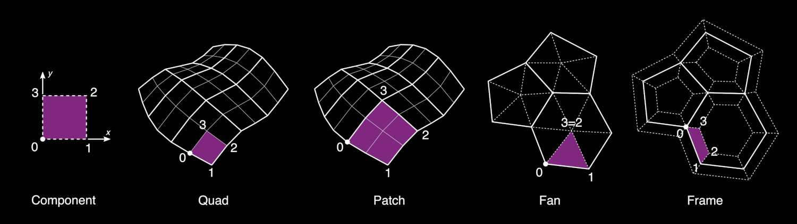
三角面
This options will automatically triangulate the Base object and will map the component
to the triangular faces. The input domain will be considered rectangular, but the
target domain will have two vertices coincident.
Quad (default)
This is the default method and will map the Component domain to each quad face of the Base object.
If an face has more than 4 vertices, then it will be automatically separated in quad or triangular faces.
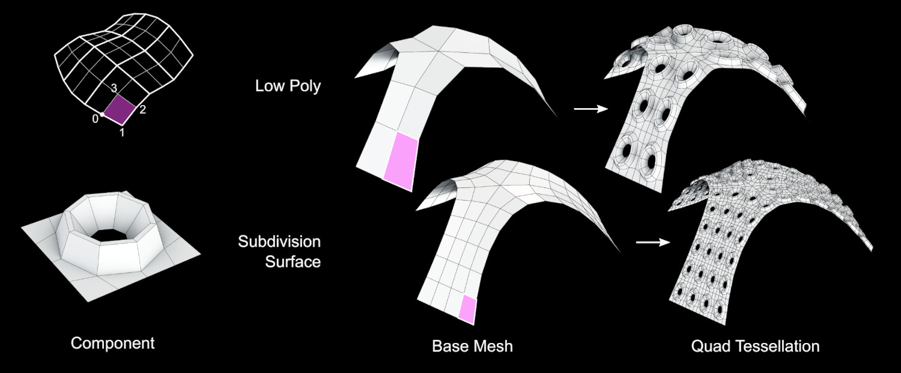
扇形
This option will split every face of the Base object in triangles connecting each side of the face
to its center.
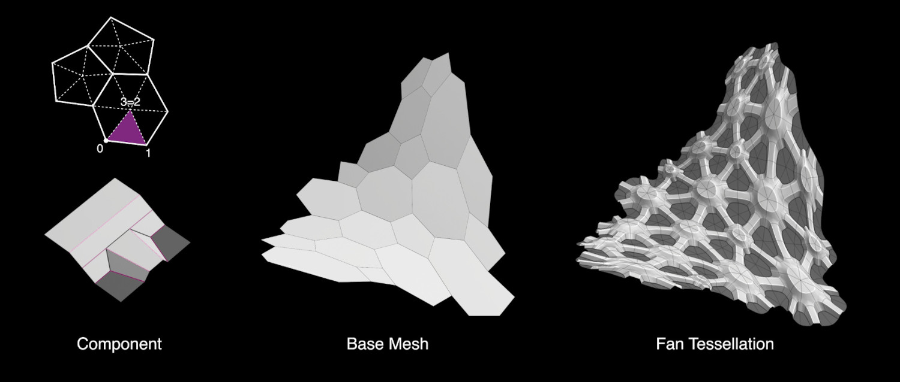
补块
This option require the use of a Subdivision Surface modifier on the Base object.
It is similar to the Quad method, but it will allow to use curved domains, based on the Subdivided patches.
If more subdivision surfaces (or Multiresolution modifiers) are used, then only the last one will be used for
defining the target patches.
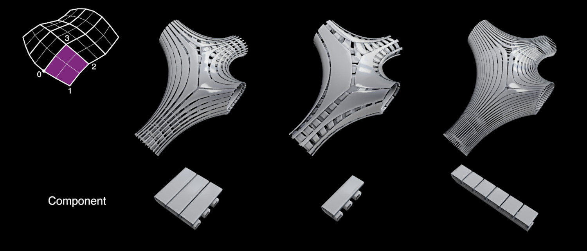
帧/框
Similarly to an Inset Face operator, this option will allow to apply the components along
offset faces of a given Thickness.
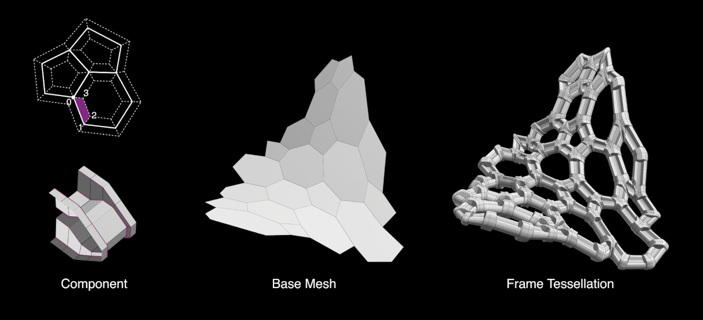
合并
Automatically merge together all the generated components.
平滑着色
Automatically sets the shading of the generated geometry as Smooth. If the Component
object is already set as Smooth, then this option is not necessary.
组件
Three different method can be used to assign the components.
物体:
Repeat the same object on all the target faces.
集合:
Assign the objects contained in a given Collection.
The components can be assigned either randomly or according to a Vertex Group.
材质:
Assign the components according to the name of the materials assigned to each face.
If for a given material, there is no an object with the same name, then the face is not used.
Watch the Tutorial (it is based on an old version of Tissue,
the procedure is slightly different now)
厚（宽）度
规模模式
常量:
Generate components with a fixed and uniform thickness in the normal direction.
相对:
Generate components with a thickness proportional to the target face dimension.
This will produce components with an aspect ration similar to the original Component
object.
比例|缩放:
control the scaling factor of the components' Thickness
偏移量:
Allows to control the alignment of the components in relation to the Base object surface.
Components Coordinates
Strategy used to determine the component's domain for mapping it on the target faces.
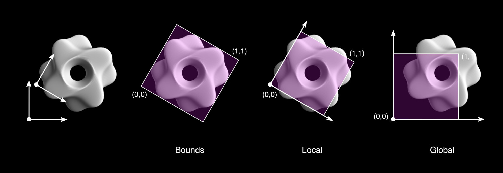
Bounds (Default)
Automatically defines the domain according the Bounding Box of the component object.
局部
Defines the domain according to the local coordinates of the component object.
The face domain is considered from 0 to 1 in both Local X and Local Y directions.
This method allows a customization of the mapping strategies, maintaining the result independent
from Location/Rotation/Scale of the component object.
全局
Similar to Local, but based on the Global coordinates of the component. This allows to easily
produce animations changing the Location/Rotation/Scale of the component.
Extend the domain of the components with a domain bigger than 0-1.
Clip (Local and Global coordinates)
Truncate the component according to the domain 0-1.
Cyclic (Local and Global coordinates)
Cut and move to the other side the parts of the component that exceed the domain 0-1.
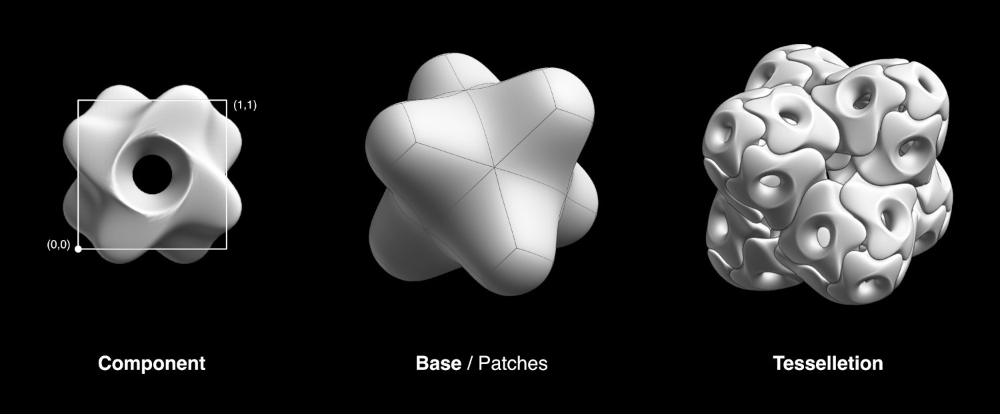
Weight and Morphing
Combine the Vertex Groups of the base object with the Shape Keys from the component,
in order to generate morphing components.
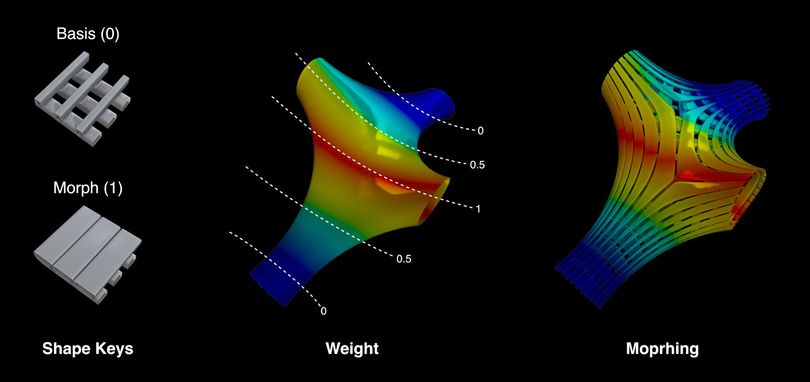
Map Vertex Groups
Remap each Vertex Group from the base mesh to the generated geometry
Use Shape Keys
Transfer the Shape Keys from the component object to the generated object.
If the name of the base's vertex groups and the Shape Keys match, then they
will be automatically assigned in order to control their morphing behavior.
Dual Mesh modifies the selected meshes creating dual meshes.
Dual Mesh output is a polygonal mesh derived from the triangular mesh.
Quadrangular meshes are automatically converted to triangular before.
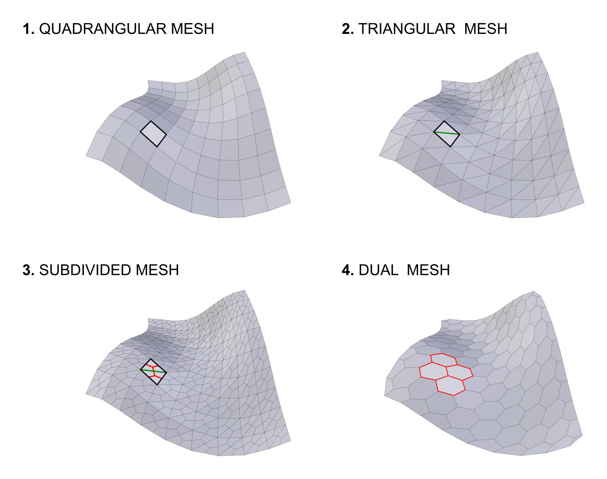
矩形面划分方法
Methods for splitting the quads into triangles. (Inherited from the Triangulate Faces tool.)
Polygon Method
Methods for splitting the polygons into triangles. (Inherited from the Triangulate Faces tool.)
Preserve Borders
Prevent alteration of the open boundaries of the mesh.
Generate a Curve object from the Loops, Edges or Particles of the active object.
This is a non-destructive operation, meaning that in any moment it will be possible to reload
the changes from the base object and change the parameters of the conversion.
It will be possible to convert specific edges/loops according to different criteria, together
with the addition of a pattern effect.
Update the active object according to the changes in the base geometries.
This operator works on the objects generated through Tessellate and Convert to Curve.
Rotate the indexes of the selected faces (in Edit-Mode). This allows to control the rotation of the components
of Tessellated objects, when using Default rotation.
Once the operator is executed, then the interested Tessellated objects are automatically refreshed.
Weight based on Vertices parameters. Allows to use vertices coordinates and normals direction.
Integer and Float sliders can be created in order to find the proper parameters more easily.
Tissue implements the Gray-Scott model for the
Reaction-Diffusion simulation.
This allows to simulate through the vertex groups the distribution of the two substances
that generate the various patterns of many living organisms.
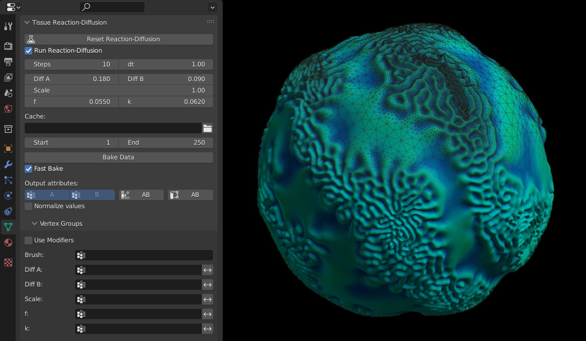
See this video for an example of the Reaction-Diffusion simulation with Tissue.